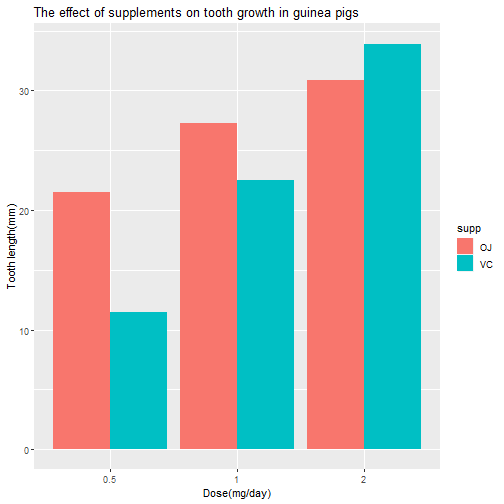

In the second portion of this project, we are going to analyse the toothgrowth data First Q1) load the tooth growth data and perform some basic exploratory analysis
library(datasets)
data("ToothGrowth")
str(ToothGrowth)
## 'data.frame': 60 obs. of 3 variables:
## $ len : num 4.2 11.5 7.3 5.8 6.4 10 11.2 11.2 5.2 7 ...
## $ supp: Factor w/ 2 levels "OJ","VC": 2 2 2 2 2 2 2 2 2 2 ...
## $ dose: num 0.5 0.5 0.5 0.5 0.5 0.5 0.5 0.5 0.5 0.5 ...
library(datasets)
data("ToothGrowth")
summary(ToothGrowth)
## len supp dose
## Min. : 4.20 OJ:30 Min. :0.500
## 1st Qu.:13.07 VC:30 1st Qu.:0.500
## Median :19.25 Median :1.000
## Mean :18.81 Mean :1.167
## 3rd Qu.:25.27 3rd Qu.:2.000
## Max. :33.90 Max. :2.000
Q2) Provide a basic summary of the data
library(datasets)
library(dplyr)
##
## Attaching package: 'dplyr'
## The following objects are masked from 'package:stats':
##
## filter, lag
## The following objects are masked from 'package:base':
##
## intersect, setdiff, setequal, union
data("ToothGrowth")
##summary(ToothGrowth)
groups <- group_by(ToothGrowth, supp)
summary_groups <- summarise(groups, count = n(),"Mean" = mean(len), "Std dev" = sd(len))
print(summary_groups)
## # A tibble: 2 x 4
## supp count Mean `Std dev`
## <fct> <int> <dbl> <dbl>
## 1 OJ 30 20.7 6.61
## 2 VC 30 17.0 8.27
The basic exploratory analysis show us that,
There were two supplements tested for growth of teeth at three concentrations (0.5, 1 & 2).
There were equal number of samples (30) for both supplements
OJ showed greater tooth growth compared to VC
Below is a graphical representation of the data
library(datasets)
library(dplyr)
library(ggplot2)
data("ToothGrowth")
groups <- group_by(ToothGrowth, supp)
summary_groups <- summarise(groups, count = n(),"Mean" = mean(len), "Std dev" = sd(len))
tooth <- ggplot(data = ToothGrowth, aes(x=as.factor(dose),y=len,fill=supp))+geom_bar(stat='identity', position='dodge')+xlab("Dose(mg/day)")+ylab("Tooth length(mm)")+ggtitle("The effect of supplements on tooth growth in guinea pigs")
print(tooth)

Q3) Use confidence intervals and/or hypothesis tests to compare tooth growth by supp and dose. (Only use the techniques from class, even if there's other approaches worth considering)
##Comparison by Supplement
Comparison of teeth length between supplements was done by a single T-test (\(\alpha\) = 0.05). The null hypothesis(H0) is that there is no difference in teeth length between the two supplements
hyp01<- t.test(len~supp, ToothGrowth)
hyp01
##
## Welch Two Sample t-test
##
## data: len by supp
## t = 1.9153, df = 55.309, p-value = 0.06063
## alternative hypothesis: true difference in means is not equal to 0
## 95 percent confidence interval:
## -0.1710156 7.5710156
## sample estimates:
## mean in group OJ mean in group VC
## 20.66333 16.96333
hyp01$conf.int
## [1] -0.1710156 7.5710156
## attr(,"conf.level")
## [1] 0.95
hyp01$p.value
## [1] 0.06063451
Further we did 3 t-tests look at the differences between supplements that were based on dose.
hyp02A <- t.test(len~supp, data = subset(ToothGrowth, dose == 0.5))
hyp02A
##
## Welch Two Sample t-test
##
## data: len by supp
## t = 3.1697, df = 14.969, p-value = 0.006359
## alternative hypothesis: true difference in means is not equal to 0
## 95 percent confidence interval:
## 1.719057 8.780943
## sample estimates:
## mean in group OJ mean in group VC
## 13.23 7.98
hyp02A$p.value
## [1] 0.006358607
hyp02A$conf.int
## [1] 1.719057 8.780943
## attr(,"conf.level")
## [1] 0.95
hyp02B <- t.test(len~supp, data = subset(ToothGrowth, dose == 1))
hyp02B
##
## Welch Two Sample t-test
##
## data: len by supp
## t = 4.0328, df = 15.358, p-value = 0.001038
## alternative hypothesis: true difference in means is not equal to 0
## 95 percent confidence interval:
## 2.802148 9.057852
## sample estimates:
## mean in group OJ mean in group VC
## 22.70 16.77
hyp02B$p.value
## [1] 0.001038376
hyp02B$conf.int
## [1] 2.802148 9.057852
## attr(,"conf.level")
## [1] 0.95
hyp02C <- t.test(len~supp, data = subset(ToothGrowth, dose == 2))
hyp02C
##
## Welch Two Sample t-test
##
## data: len by supp
## t = -0.046136, df = 14.04, p-value = 0.9639
## alternative hypothesis: true difference in means is not equal to 0
## 95 percent confidence interval:
## -3.79807 3.63807
## sample estimates:
## mean in group OJ mean in group VC
## 26.06 26.14
hyp02C$p.value
## [1] 0.9638516
hyp02C$conf.int
## [1] -3.79807 3.63807
## attr(,"conf.level")
## [1] 0.95
Conclusion: As one can see from the first table, there is no significant difference (0.06) between the two supplements and tooth growth.
In the tests that were split by dose, there was a significant difference between the two supplements for doses: 0.5 mg & 1mg (p-values of 0.006 &0.001 respectively)
##Comparison by Dose
Comparison of teeth length between doses irrespective of supplement was done by three T-tests (\(\alpha\) = 0.05).
The null hypothesis(H0) is that there is no difference in tooth length between dose 0.5 & 2
Split_Dose<-split(ToothGrowth, ToothGrowth$dose)
names(Split_Dose) <- c("half", "one","two")
hypdose <- t.test(Split_Dose$half$len, Split_Dose$two$len)
hypdose
##
## Welch Two Sample t-test
##
## data: Split_Dose$half$len and Split_Dose$two$len
## t = -11.799, df = 36.883, p-value = 4.398e-14
## alternative hypothesis: true difference in means is not equal to 0
## 95 percent confidence interval:
## -18.15617 -12.83383
## sample estimates:
## mean of x mean of y
## 10.605 26.100
hypdose$p.value
## [1] 4.397525e-14
Conclusion: The p-value is 4.397525e-14 and therefore we reject the null hypothesis in favor of the alternate hypothesis.
Q4: State your conclusions and the assumptions needed for your conclusions.
##Assumptions:
1) It is assumed that the data is collected from a representative, randomly selected portion of the total population. 2)The second assumption is the data, when plotted, results in a normal distribution, bell-shaped distribution curve. 3)The final assumption is homogeneity of variance. Homogeneous, or equal, variance exists when the standard deviations of samples are approximately equal.
##Conclusions:
As one can see from the first table, there is no significant difference (0.06) between the two supplements and tooth growth.
In the tests that were split by dose, there was a significant difference between the two supplements for doses: 0.5 mg & 1mg (p-values of 0.006 &0.001 respectively)
The p-value is 4.397525e-14 and therefore we reject the null hypothesis in favor of the alternate hypothesis.